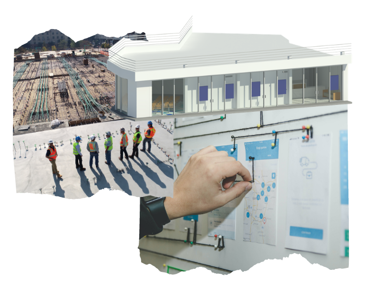

Presente & futuro de la construcción
Colaboramos con organizaciones y personas involucradas en la industria de la construcción, que buscan innovación y valor en sus proyectos en un mundo saturado de normalidad

Colaboramos con organizaciones y personas involucradas en la industria de la construcción, que buscan innovación y valor en sus proyectos en un mundo saturado de normalidad
Ayudamos y colaboramos con empresas y personas vinculadas al sector de la construcción para optimizar e impulsar su propuesta al mercado. Inyectando innovación en su proceso de trabajo basados en nuestro modelo DLB:
Basados en la Metodología BIM, trabajamos como núcleo del proyecto, agrupamos todas las áreas involucradas, desde el diseño hasta la construcción.
Digitalización de elementos que componen el proyecto. Cada elemento con información: tamaño, tipo de material, color, propiedades físicas, propiedades químicas
Un modelo digital 3D está compuesto por todos elementos reales que compondrán el edificio con la información de cada elemento, utilizando Revit.

Impartimos talleres y cursos para ayudar a impulsar la metodología BIM, la digitalización y la adopción a la nuevas herramientas en el sector de la construcción.
Ayudamos a las empresas constructoras a introducirse en el mundo digital mediante herramientas y cambio de cultura y procesos.
Etapa 1: Modelado As-Built LOD 200
Etapa 2: Adopción de Software REVIT
Etapa 3: Implementación de metodología BIM para expansión de Centros de Negocio.
Modelado arquitectónico en Software Revit para posterior analisis en Software Tekla que permite la cuantificación de materiales y planos estrecuturales.
Simulación en software NavisWorks para montaje de estructura.
Video
Levantamiento de modelo 3D con scanner digital 3D.
Posteriormente se procedio a limpiar lel modelo y perfeccionar detalles y permtiir un modelo con todos los elementos visibles.
Capacitación a parte del equipo, incluyendo a los líderes de cada área, en modelado arquitectónico en Revit así como introducción a la implementación de BIM en la empresa.
Colaboramos con JF Palm en la capacitación del líder de proyectos en la introducción de BIM y Revit para principiantes continuando con asesorías en la aplicación de sus proyectos.
Parte del equipo
Fue líder de un grupo involucrado en la construcción de la planta de BMW en México que requirió metodología BIM en todo el proceso. Participo en lider de proyectos en Landmark Zapopan
Su experiencia se centra en el Software BIM, trabajo basado en LEAD managment y adaptación de metodología BIM en departamento de expansión.
Experiencia en transformación digital en empresas y adaptación en modelos de trabajo. Coocimiento en Modelado en Revit.